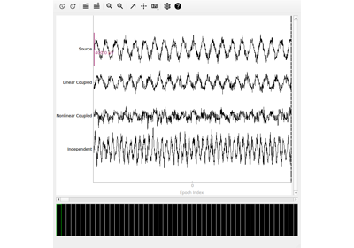

mne_connectivity.wsmi#
- mne_connectivity.wsmi(data, kernel, tau, indices=None, sfreq=None, names=None, tmin=None, tmax=None, anti_aliasing='auto', weighted=True, average=False, verbose=None)[source]#
Compute weighted symbolic mutual information (wSMI).
- Parameters:
- dataarray_like, shape (n_epochs, n_signals, n_times) |
Epochs The data from which to compute connectivity. Can be an
mne.Epochsobject or array-like data.- kernel
int Pattern length (symbol dimension) for symbolic analysis. Must be > 1. Values > 7 may require significant memory.
- tau
int Time delay (lag; in samples) between consecutive pattern elements. Must be > 0.
- indices
tupleof array_like |None Two array-likes with indices of connections for which to compute connectivity. If
None, all connections are computed (lower triangular matrix). For example, to compute connectivity between channels 0 and 2, and between channels 1 and 3, useindices = (np.array([0, 1]), np.array([2, 3])).- sfreq
float|None The sampling frequency. Required if
datais an array-like.- namesarray_like |
None A list of names associated with the signals in
data. IfNoneanddatais anmne.Epochsobject, the names indatawill be used. Ifdatais an array-like, the names will be a list of indices of the number of nodes.- tmin
float|None Time to start connectivity estimation. Note: when
datais an array-like, the first sample is assumed to be at time 0. Formne.Epochs, the time information contained in the object is used to compute the time indices. IfNone, uses the first sample.- tmax
float|None Time to end connectivity estimation. Note: when
datais an array-like, the first sample is assumed to be at time 0. Formne.Epochs, the time information contained in the object is used to compute the time indices. IfNone, uses the last sample.- anti_aliasing
'auto'| bool Controls anti-aliasing low-pass filtering before symbolic transformation.
'auto'(default): Smart detection based ondatatype and preprocessing. For array inputs, always applies filtering. Formne.Epochs, checksinfo['lowpass']to determine if data is already appropriately filtered. Only applies filtering if existing lowpass > required frequency.True: Always apply an anti-aliasing filter atsfreq / kernel / tauHz.False: Never apply filtering. Use only if you have already applied appropriate low-pass filtering to your data.
Warning
Setting to
Falsemay produce unreliable results if the effective sampling rate (sfreq / tau) violates the Nyquist criterion for the spectral content of your data.- weightedbool
Whether to compute weighted SMI (wSMI) or standard SMI. If
True(default), computes wSMI with distance-based weights. IfFalse, computes standard SMI without weights.- averagebool
Whether to average connectivity across epochs. If
True, returns connectivity averaged over epochs. IfFalse(default), returns connectivity for each epoch separately.- verbosebool |
str|int|None Control verbosity of the logging output. If
None, use the default verbosity level. See the logging documentation andmne.verbose()for details. Should only be passed as a keyword argument.
- dataarray_like, shape (n_epochs, n_signals, n_times) |
- Returns:
- conninstance of
ConnectivityorEpochConnectivity Computed connectivity measure. If
average=True, returns aConnectivityinstance with connectivity averaged across epochs. Ifaverage=False, returns anEpochConnectivityinstance with connectivity for each epoch.
- conninstance of
Notes
The weighted Symbolic Mutual Information (wSMI) is a connectivity measure that quantifies non-linear statistical dependencies between time series based on symbolic dynamics [1].
The method involves:
Symbolic transformation of time series using ordinal patterns
Computation of mutual information between symbolic sequences
Weighting based on pattern distance for enhanced sensitivity
Added in version 0.8.
References
Examples using mne_connectivity.wsmi#

Compute connectivity using weighted symbolic mutual information (wSMI)